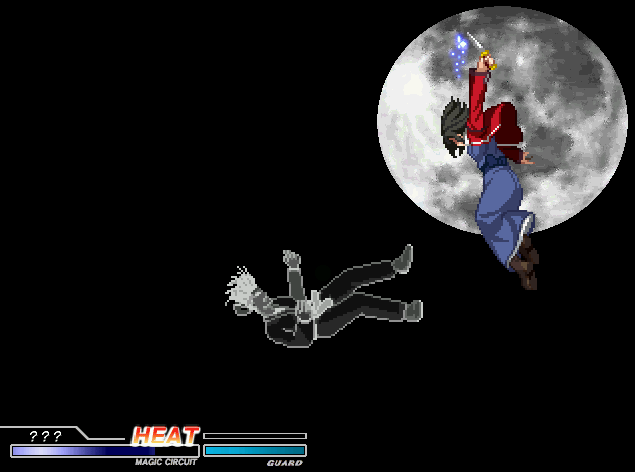
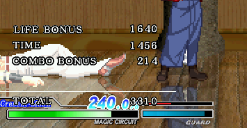

＜まえがき＞
とりあえず9割方(8割？)終わったのでラストとなるこの暇文。
文字通りお暇な方に…届けっ！コココ…！キキキ…！
＜フルムーンの作成＞
前回のCH-1暇文からの追加としては、まずフルムーンスタイルを追加した。
必殺技系統は既にクレセントとハーフで大方終わっていたので、大して苦はなかったのだが
通常技系統が他の2スタイルとは明らかに異なるので、そこは結構画像とcnsの追加を行った。
「苦はなかった」と書いたが、まぁ実は一番の難所である当て身技がまだおかしい。
当て身には「陰陽螺旋」と「陰陽螺鈿」があるが、その2種類xボタン数(3つ)で計6つの当て身がある。
更に、陰陽螺鈿はハーフにも存在するので、スタイルで分けなければ両儀式は9つの当て身を持っている。
何がどう違うのか全く分からん。
まぁ一応、庵の屑風のように背後に敵をスライドさせるパターンと、そうではなく相手を空中にポイ捨てする
パターンがある事くらいは分かった。
あとこれは後の話だが、某氏が参考動画をくれたのでかなり(文字通り)参考になったが作ってるときは
意味がわからなかったので、結構適当な技になっていたりする。
＜イクリプススタイルの作成＞
ボス専用モードのイクリプスも用意した。
「ボス専」ということで、ぶっちゃけ全く興味がない。
あと相変わらず、どんなスタイルなのかよく分からん。
攻略本に「フルムーンがベース」みたいな事が書かれていた情報と、動画や掲示板でイクリプスは
「ゲージが自動で増える」って情報を得ていたのでゲージが自動で増えるフルムーンにした。
何の捻りもなく、聞いた事をそのまま反映しただけって所が使えない新卒みたいで可愛いでしょ？
でも、別の攻略本にはクレセントがベースとか書かれてるらしい。
確実にどっちかの攻略本が誤植じゃん編集者仕事しろ。
＜特殊スタイルの作成＞
念のために作った。人生色々あるからな。
基本的にはどのスタイルにも属さない変態スタイルで、
ジャンプキャンセル制限がなく、全スタイルの通常技、必殺技、特殊技が全て使用可能。
更に本スタイル専用技の当て身技として矛盾螺旋も搭載してみた。まだ作ってないけど。
デメリットとしては、
・紙防御力が更に紙になった(ガードゲージ防御力含め)
・強制開放の衝撃波が出ないので相手を吹っ飛ばせない
・強制開放中に無敵時間がないので完全無防備になる
・ナイフ拾いがモーションの途中でキャンセルできない
・隠しコマンド入れないと選択できないからコマンド入力がダルい
・操作が難しい
くらいかな。
っていうか、完全に全スタイル中最強。
多分だけど、ゲージがある状態で操作が上手い人がやれば10割コンボとか出来るのではないだろうか。
ただし、紙すぎて1撃食らうとコンボでこちらも10割減る可能性があるため、生か死かの2択を選ぶアカギスタイルでもある。
製作的な観点の話をすると、特殊スタイルのファイルは用意したが基本的には各スタイルのステートを
そのまま使用している。
当初は基本スタイルのように特殊スタイルファイルに別ステートを設けようと思っていたが、ステート数が膨大になる事と
引用元である基本スタイルのステートに変更を加えた場合、それを引用した特殊スタイルのファイル内のステートにも
手を加える必要があり、1度で済む修正に倍の手間がかかる事から、やはり基本スタイルのステートを参照させるようにした。
ただし、大幅に性能が違うADだけは特殊スタイルのファイルに書いた。
死の線をロックしないのはマイナスなのか、プラスなのか・・・。
＜特殊LAの作成＞

ｵｰﾋﾞｰｱｰｽ
kalafinaファンにぶち殺されるリスクを背負ってまで、なぜこれをやろうと思ったのか…。
しかも処理がまた死ぬほどカッタルイし、そこまでカッタルイのに全然大したことない技になってしまうしで
もう踏んだり蹴ったり。ぎゃふん。
何度も原作1話の戦闘シーンを見て、合うアニメを選考した。
20以上のヘルパーを使って残像とハウリングを表現した。
総フレーム数はイグニスの「残酷なる神の計画(笑)」を超えた。
フルムーンスタイルの製作時間よりはるかに長い時間がかかった。
その結果がこれ。デュクシwwwwwwwwwww
でもみんな口を揃えて「い、いいね！」とか「か、かっこいいと思うよっ！」とか言ってくれる。
空気読みすぎだろ。
＜システムの作成＞
まぁもうここまで来ると「別に」って感じだが、まず追加したのはフルムーンのシステムと
オリジナルの特殊スタイルのシステム。
特殊スタイルのシステムは、全スタイルを合わせたものにした。
正直もうどんなシステムか覚えてない。
2ゲージ持ちでハーフみたいにHEATになって、クレセントみたいにHEAT中に強制開放できるって事くらいは
なんとか覚えてるレベル。あとパワー溜めとイニシアティブヒートも入れた気がする。
作っておいて何だが、ぶっちゃけこんなわけの分からんシステムなんか使いこなせんよ。
あとやりたくないのはスライドメッセージシステム。
ただ文字が画面に出るだけで、完成しても全然楽しくないとても心温まるメルヘンシステムです。
作りとしては、文字と減算透過したオブジェクトを3段階に分けて表示している。
マジでクソかったるいなこれ。どうしてこんな作りになった…。
ちなみに、まだ作ってないメッセージはイニシアティブヒートとEXガードの2つ…だと思う。
まぁここまでやって中途半端に放置って事はないので、頑張って作るしかない。
あと気づいてる人は多いと思うが、ワーニング垂れ流し。
原因も解消方法も知ってるが、解消するとシステム的に不具合が出る破綻した作りになっている。
残業しないと家に帰れない作りになってるIT業界みたいでかっこよくね？
というわけで、解消不能。
解決策はあるけど、結構作り変えないといけないのでやりたくないです。
っていうか俺がO型だからか、ワーニング垂れ流しとか全く気にならん。動けばいいだろ(ｷﾘｯ
前回から追加という意味では、ヴァイタルソースシステムもだ。
CH-1暇文で「体力回復とかｗｗｗ絶対搭載しねぇよｗｗｗｗ」って書いたのにね。みじめだね。
理由としては、実はまだよく分かってないが強制開放の意味がなくなってしまうらしい。
まぁ何かそういう声がとても多かったので、そんな気がしてきて搭載しようと思い直した。
これが集団心理というやつか…。
で、また新規ゲージのヴァイタルゲージを起こした。
これがないとどれだけの量、回復するか視覚で見えないよね？
それが分からないと、いつ強制開放するべきか戦略的な見地で判断できないと思ったので、
回復量が視覚的に分かるゲージの搭載は必須と考えて搭載したが、どうだろうか。
でもヴァイタルゲージ搭載してるMBキャラなんか見たことないな。
みんなどうやって回復のためにここで強制開放するぞ！って判断してるんだろうってちょっと考えた。
とりあえず死にかけだったらたくさん攻撃食らってるし、かなり回復することマチガイなし！って
事で死にかけたら強制開放してるだけなんだろうか…。
次にスコアグラフシステムの搭載。
要するに戦闘終了後にその戦闘を評価する点数が出るシステム。
まぁ原作の通りだけど、原作の評価ロジックの詳細なんかどの攻略本見ても当然ながら
載ってるわけないので、自前のロジックを適当に搭載。
現状では結構適当だけど、いずれ色々な評価条件を加えていきたいとの考えはある。
いつものことだが、あくまで「つもり」なので注意。
評価方法の詳細は現状(ver2.2)では下記のようになっている。
・Life
→最大ライフを11000とし、食らったダメージ分除算されていく。
まぁ普通に攻撃を食らわなければ、それだけ高得点ってこと。
・Time
→最大で10000前後。時間が経過するにつれ減っていく。
まぁ普通に敵を早く倒せば、それだけ高得点ってこと。
・Combo Bonus
→10ヒット以上のコンボ1回で+1000加算。
AD,AADヒットで+10000加算。ちなみに最低値は214。
まぁ普通に(ry
・Perfect
→一度も攻撃を食らわなかった場合のボーナス点。
20000点固定で与えられる。
一度でも食らえば、ボーナスはなーしっ…！
現状、コンボボーナスが一番大雑把なので、EX技やダメージ値も加味して
算出できるようにはしたいとは考えているけど、考えているだけかもね。
どうでもいいけど、俺が取った最低点はこれくらい。

なんて・・・無様・・・。
＜今後＞
・浮きとか重力とか受け身時間とかの調整（随時）
・当て身技の修正
もう必須なのはこれくらい？
と思ったけど今これ書いてる最中にEXガード作ってないの思い出した。
・EXガードの作成
・浮きとか重力とか受け身時間とかの調整（随時）
・当て身技の修正
くらいか。もちろんバグ修正なんて当たり前の事は除いて、の話。
細かい所で言うと、ヒットエフェクトの修正くらいはやるかも。
特に、玻璃の月のヒットエフェクトは特殊みたいだし。
必須でないが、漠然と思っている事は
・擬似学習AIの搭載
・特殊LA作り直し
・LA桜吹雪オブジェクトのvel調整
桜吹雪オブジェクトのvel調整だけはやると思うが、それ以外はまず無理だろう。
まぁ一応「暇でモチベーションもあれば適当にやりたいな」程度。
以上デス。
一応、原作再現チックには出来たのかな？
原作知らないのに原作再現って、時が止まっているのに5秒と表現するくらいおかしいが
とにかく原作っぽくという事だ。
今回の製作も色々あったけど、結果的には楽しかったです。
空箱なんとかしろよクソがとか、何でxxしないの？バカなの？とか言われたり、
キチガイかってくらい複雑なシステムにキレそうになったり、嫌な事も多々あったけど
使って遊ぶと楽しいお。
さて、最後だけどやはり御礼でいくか。
原作との違いや仕様については本当に色んな人に教えてもらった。
あと製作関連の最初としては、まーや様のボイスをクリア化してくれた人。
これは本当にモチベーション上がった。
当初あまりやる気が起きなかった原因はまさにボイスだった。
式のボイスって本当にかっこいいし、劇場版見た者にとってはドット以上に
式を印象付けるものだと思う。
まぁ俺が極度の声優ヲタなだけかもしれないが。
一番お世話になったのはDOBUROKU氏で、MCゲージ回りの画像をお借りした。
関係ないけどMBキャラを多く作ってる製作者がいて、その人と同じようなスタイル選択システム
にしないのかという質問がたまにあるけど、シンプルで見やすく無駄のないDOBUROKU氏の
スタイル選択システムに合わせる形を取った。
オブジェクトの位置もネコアルク・カオスと一致するように調整。
スタイル選択時にハンドルキャップとか選択するのは、やろうと思えばもちろん出来るけど
個人的には不要と判断。あと使ってるライフバーによっては、表示が大きすぎてスタイル名の
オブジェクトとかが隠れてしまうのも少々アレだったので。
それと同氏には、BEとAD時に表示される死の線エフェクトも提供して頂きました。
あの300枚を超えるスプライトを全て…。
色んな所で抽出不可と言われていて、諦めてたのでびっくりした記憶があるｗ
謎の技術すなぁ。
他にも沢山の方々にお世話になったけど、書き切れないのでこの辺でｗ
元々有名製作者、もとい優れた製作者じゃないのであんまりな出来栄えだったりしますが、
原作、劇場版と合わせて楽しんもらえればと思います。
さぁ！今日からあなたも月厨に！
エス氏から「紫紀と式でコラボ技作らないか」とメールが来た。
あのハイスペック痴女は俺の式をどうするつもりなの？
食べるの？乗り物にするの？
乗るなら僕に乗(ry